今日やることに
迷わない
志望校と現在の学力から、教材・範囲・期限を整理。学校や部活の予定も踏まえて、今日取り組む課題まで具体化します。
学習計画のつくり方を見る担当コーチが毎日の勉強に伴走
志望校までの計画づくりから毎日の勉強と週1回の面談まで一人ひとりを担当コーチが支えます
月額60,000円（税抜）税込66,000円／月入会金 ¥50,000
学習のイメージ
こんな悩みを持つ受験生へ
授業で理解したことを、自分で解ける力へ。Actifyは授業の外にある、一人で勉強する時間を支えます。
講義を受けることが中心の塾とは異なり、自習の計画・実行・振り返りを担当コーチと進める学習コーチングです。
Actifyの3つの支援
学習管理アプリ「Actifyボード」と担当コーチが、毎日の勉強をひとつながりで支えます。
志望校と現在の学力から、教材・範囲・期限を整理。学校や部活の予定も踏まえて、今日取り組む課題まで具体化します。
学習計画のつくり方を見る小テストと学習記録で、理解できたことと苦手を確認。質問・添削・復習を組み合わせ、次の学習につなげます。
理解を確かめる仕組みを見る週1回の面談で学習を振り返り、進め方を調整。計画が崩れたときも、進路に迷ったときも、担当コーチと一緒に考えます。
コーチの支援を見るActifyで過ごす1週間
毎日の記録が次の面談につながり、面談が翌週の行動につながります。
担当コーチと決めた計画をActifyボードで確認。学校や部活と両立できるよう、取り組む教材と範囲を把握します。
今日の課題を開いて学習を開始。小テストの点数やつまずきを記録し、分からない問題はチャットで質問します。
学習時間・点数・進捗を担当コーチと確認。計画どおりに進まなかった理由も整理して、次に優先することを決めます。
やり残した課題や必要な復習を組み直し、翌週の行動へ。記録と対話を重ねながら学習を続けます。
学習の進め方の一例です。面談の曜日や課題の配置は、個別の計画に応じて異なります。
今の勉強の悩みから相談できます
学習について相談する塾生が毎日使う学習管理アプリ
やること・勉強時間・点数・進みがひとつの画面にまとまります
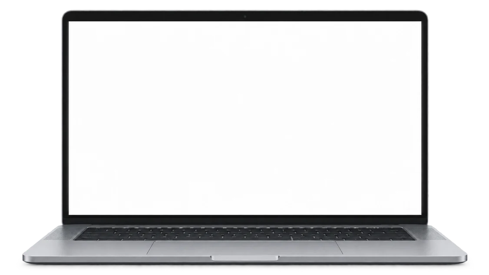
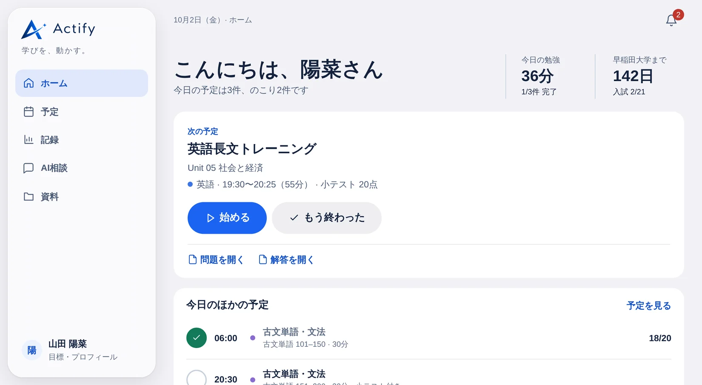
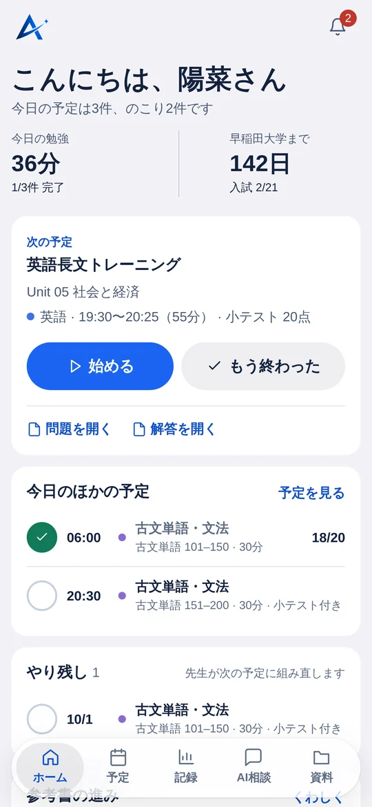
開発中の画面イメージ｜データはサンプル
担当コーチが入試までの学習ルートを作ってActifyボードに入れます
模試と得意・不得意を分析
志望校に必要な学習を整理
取り組む範囲と順番を決定
担当コーチが設計する学習ルート
学校や部活に合わせて勉強の予定を組みます
勉強できる時間をカレンダーに緑の帯＝勉強できる時間
教材と小テストを時間割へ
やり残しと復習を組み直す
生徒の予定画面（一週間）
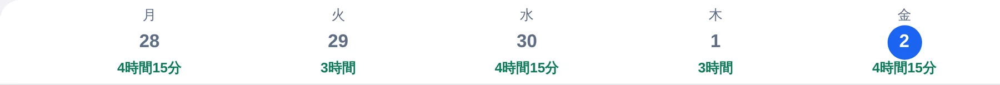
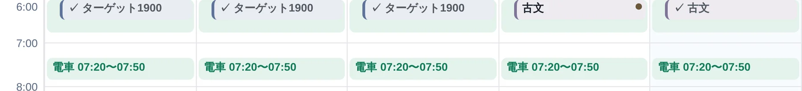
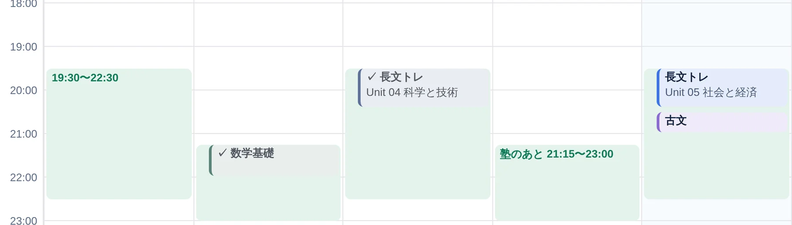
開発中の画面の一部｜データはサンプル
今日の課題を確認してそのまま学習を始めます
教材・範囲・開始時刻を表示
一時停止と再開にも対応
探す手間を減らして学習へ
生徒の学習画面
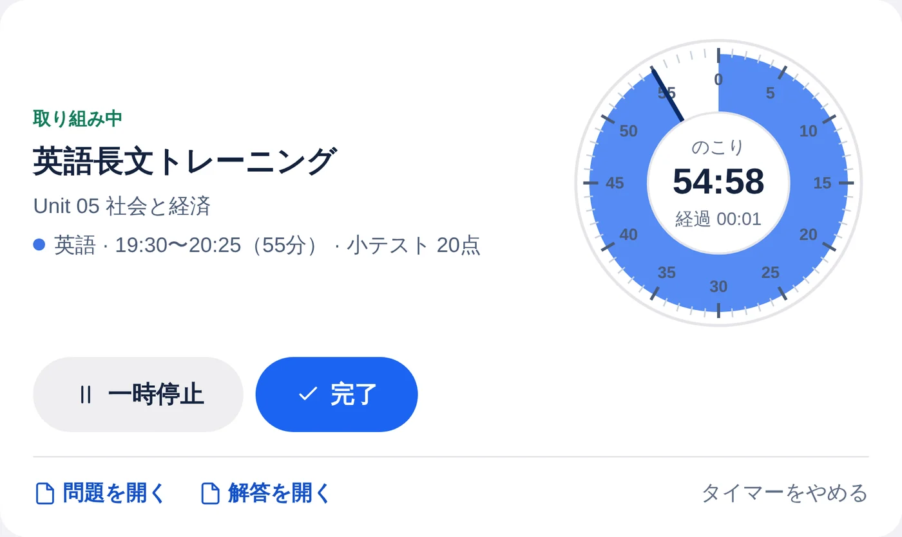
開発中の画面イメージ｜データはサンプル
学んだ内容を小テストで確かめます
問題と解答を画面から開く
得点だけで簡単に記録
難しさやつまずきを任意で記録
生徒の完了記録画面
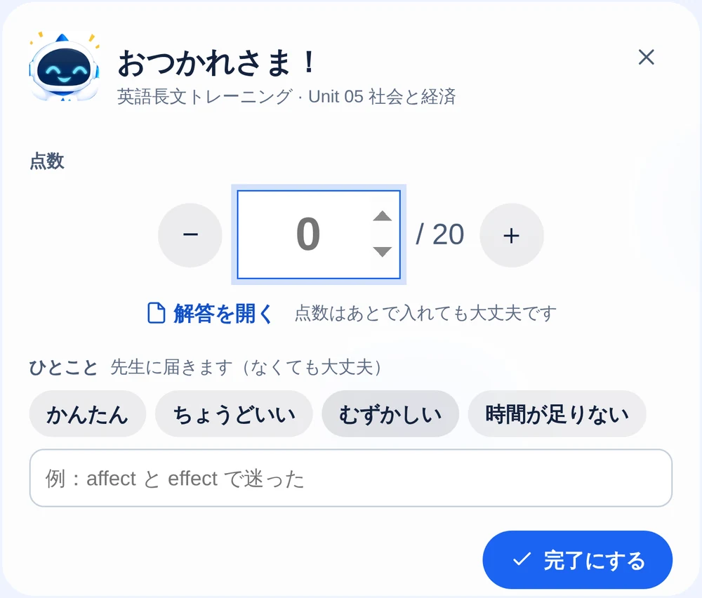
開発中の画面イメージ｜データはサンプル
講師が学習結果を確認して次の計画に生かします
目標との差を画面で把握
点数に合わせて再テストを準備
点数ややり残しをもとに調整
生徒の参考書進捗画面
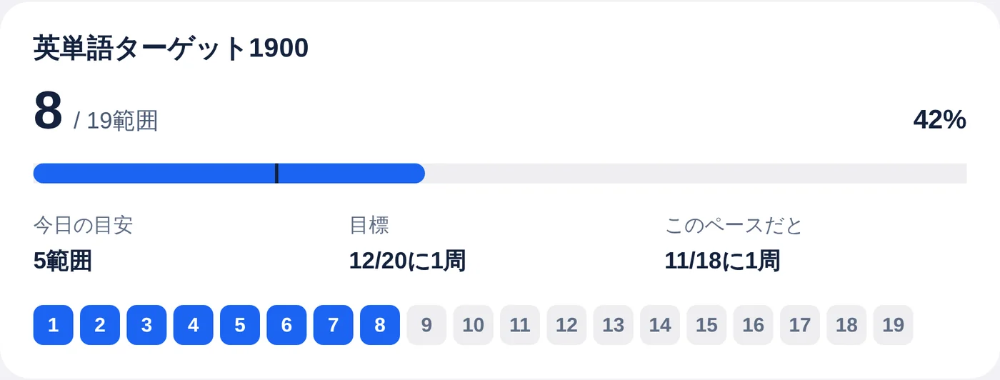
開発中の画面イメージ｜完了予測は進み方の目安
教材の範囲と苦手に合わせてActifyがオリジナルの問題を作ります
参考書の範囲と点数が低い所から出題
答えを覚えずに何回分でも演習できる
解き方と復習の進め方まで確認できる
問題は説明用のサンプル
志望校の過去問を大問ごとに分析して同じ形式の問題をオリジナルで作ります
出題形式・語彙や文章のレベル・解答時間
過去問を解き終えても本番形式で練習できる
目標時間つき解答・解説で決め手まで確認
例：慶應義塾大学 法学部・英語 下線部の語に合う定義を選ぶ大問
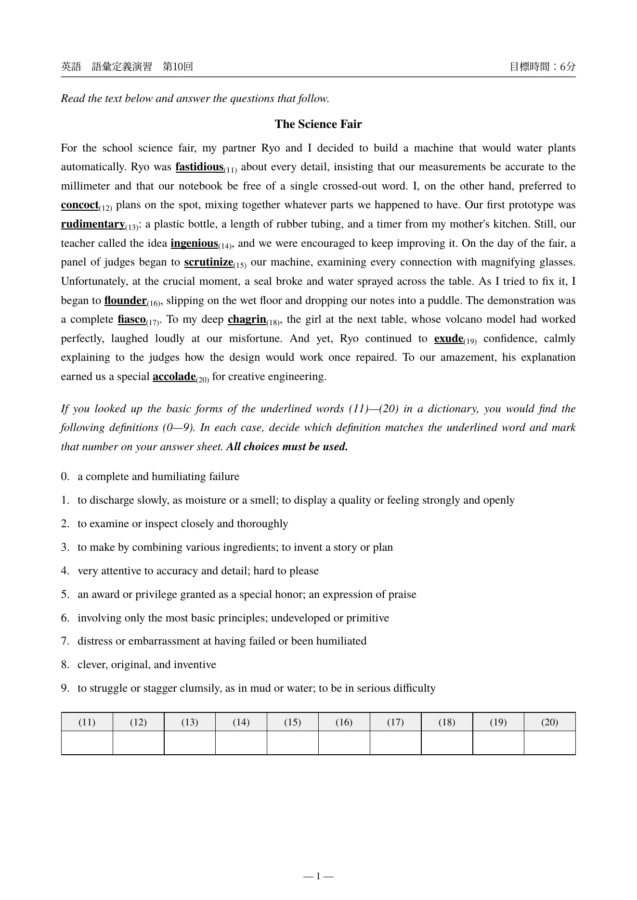
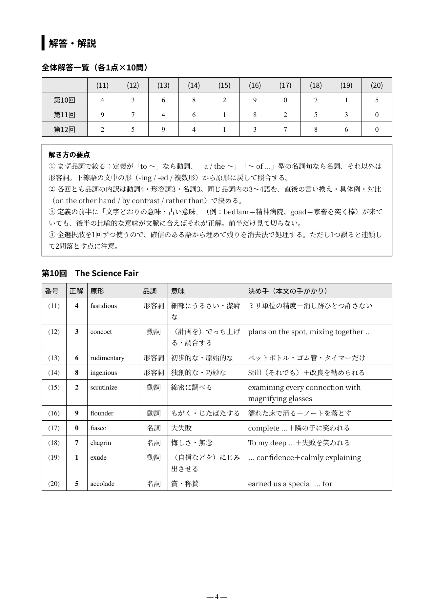
問題文はActifyのオリジナル（過去問の転載ではありません）
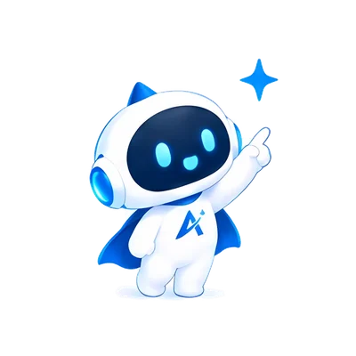
Actifyボードにいる受験AIのキャラクター生徒の予定・参考書の進み・点数を見て勉強の相談にいつでも答えます
「今日なにからやる？」「この問題の解き方は？」
予定・進み・点数を見て具体的に答える
AIは予定を変えず判断は人が行います
Actifyくんとの相談画面
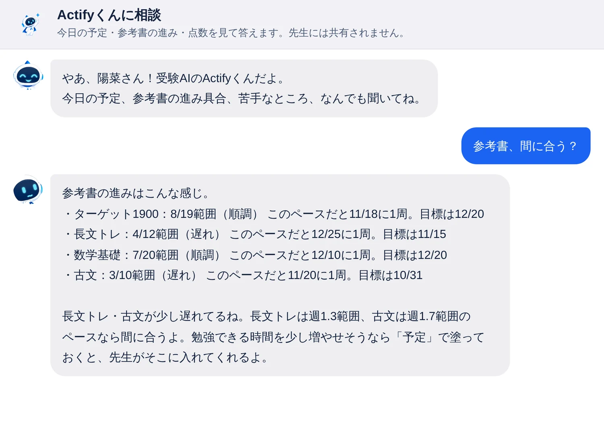
画面の返答はサンプル｜使いすぎを防ぐため1日に使える回数に上限があります
人がそばで伴走
Actifyボードの記録を見ながら担当コーチが面談とチャットで支えます
担当コーチとオンラインで学習を振り返り翌週の予定を決めます
時間・点数・つまずきを確認
優先する範囲と復習を調整
自宅から参加予約はActifyボードから
オンライン面談のイメージ｜予約は原則として前日まで
問題の疑問や学習の悩みを講師にチャットで相談できます
解けない問題は写真を送るだけ
どこで間違えたかまで返信
一人で抱えず担当コーチへ
24時間受付2:00〜6:00は翌朝の返信になる場合があります
今日
y = x² − 4x + a（0 ≦ x ≦ 3）の
最小値を a で表せ
y = (x − 2)² + a − 4
最小値 a − 4 ？
問3の(2) これで合ってますか？
平方完成はバッチリ！
あとは x = 2 が 0〜3 の範囲に入っていることを一言書けば満点の答案になるよ
なるほど！書き直します
チャットの画面イメージ｜やり取りはサンプル
将来の目標と受験勉強のつながりを一緒に考えます
学びたいことや関心を言葉に
大学で何を学ぶかを考える
目標に向けた行動を具体化
担当コーチと考える3つのこと
Actifyボード
担当コーチのサポート
掲載した塾の支援は月額料金に含まれます
掲載している画面は開発中のイメージ｜データはサンプル
Actifyは授業ではなく毎日の自習を支える塾です担当コーチが学習計画を作り毎日の学習をActifyボードに記録します週1回の面談で振り返って翌週の計画を決めます
やり残しと復習を組み直して予定を再調整します点数ややり残しをもとに担当コーチが計画を見直します
LINEで24時間受け付けています2:00〜6:00は翌朝の返信になる場合があります
週1回Zoomで行うので自宅から参加できます予約はActifyボードから原則として前日までにお願いします
ありませんAIは予定を変えず計画の判断は担当コーチが行います使いすぎを防ぐため1日に使える回数に上限があります
パソコンでもスマホでも同じ画面で使えます
いいえ志望校の過去問を大問ごとに分析して同じ形式の問題をActifyがオリジナルで作ります
入会時に入会金 ¥50,000がかかりますこのページに載せた支援はすべて月額60,000円（税抜・税込66,000円）に含まれます
受験生・保護者の方へ
勉強の進め方、計画の立て方、志望校への不安。まずは気になっていることから、公式LINEでご相談ください。
下のボタンからActifyの公式LINEへ進み、友だち追加してください。
学年・志望校・今困っていることを、分かる範囲でお知らせください。
担当者からの返信で、支援内容や相談の進め方をご確認いただけます。
LINEが別画面で開きます。ご質問は生徒ご本人・保護者の方、どちらからでもお送りいただけます。
対象学年や対応科目、面談時間、教材費、保護者への共有方法など、入会前に確認したいこともあわせてご相談ください。
まずはサービス資料を読む →受験生・保護者の方へ
サービスの内容を15ページの資料にまとめています
やあ！ぼくActifyくんこの塾のことを案内するね